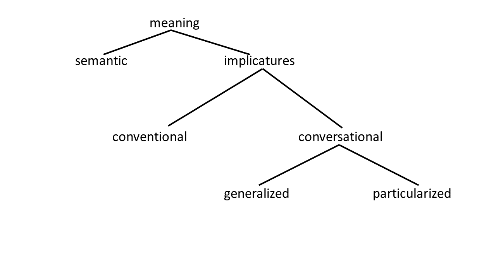
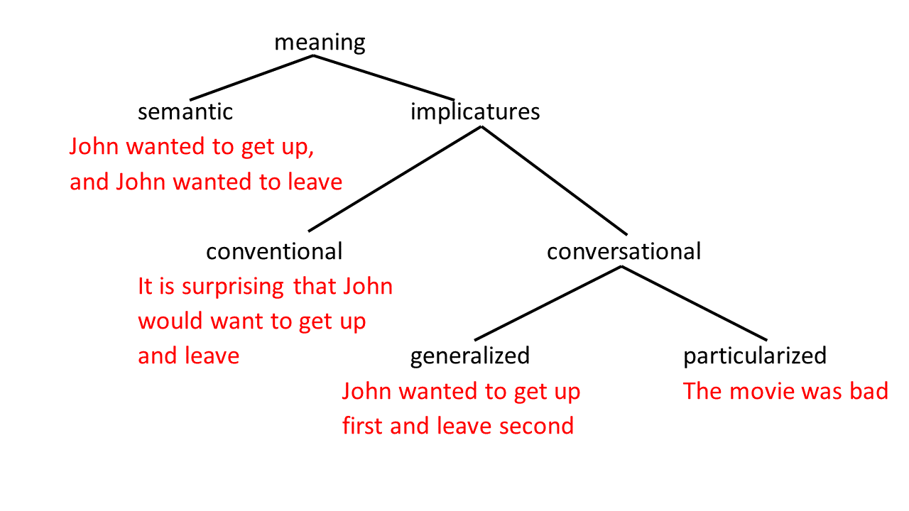
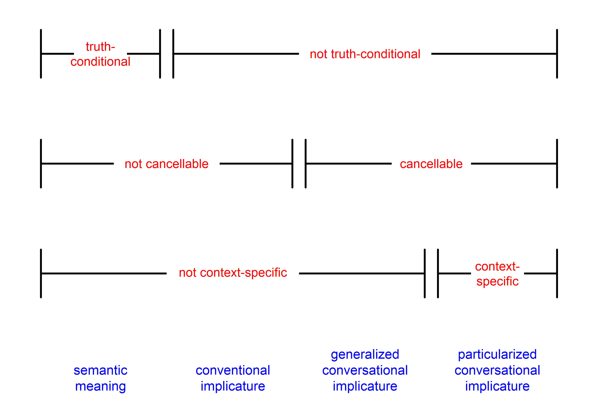

Grice distinguished a few types of implicatures. Most of these categories are problematic,
and the distinctions between them remain controversial, but it's still useful to review them to
become aware of relevant pragmatic issues (are you noticing a theme yet in this class?). Also,
these terms and concepts are still commonly used, so you need to know what they are if you want
to understand people talking about pragmatics.
suggests: First they fell in love, then they got married
Did you win the lottery and not tell me? (uttered in the Breaking Bad scene we discussed in the previous module)
suggests: We don't have enough money for the house you want
When (1) suggests that English stuff is usually not good, that's
an example of what Grice calls conventional implicature. On the other hand,
the things suggested by (2)
and (3) are both examples of what Grice calls conversational implicature, but they're
different types. The suggestion in (2), that Sammy and Chris fell in love first and
got married second, is what Grice calls a generalized conversational implicature.
On the other hand, the suggestion in (3), that Walt and Skyler don't have enough money
for a fancy house, is what Grice calls a particularized conversational implicature.
Let's break down what these distinctions mean.
Conventional implicatures
These are implicatures which, according to Grice, don't come from context
or even from reasoning about speaker's beliefs and intentions, but come from the way
language is conventionally used. e.g., as speakers of English we know that "but" is
used in a way that implies some sort of contrast, even though it doesn't literally mean
that.
Many conventional implicatures feel, at first blush, like regular old
literal meaning. For example, one of Grice's examples is "The queen is English and
therefore brave"; he argues that this utterance implies, but doesn't literally
say, that the quality of brave-ness follows from the quality of English-ness, i.e.,
all English people are brave. Intuitively, it seems like the second part (i.e. the idea
that all English people are brave) just comes from the literal "meaning"
of therefore. Nevertheless, many pragmaticists argue that, even though
these implicatures come from the conventional usages of certain words (like but and
therefore), the implicatures themselves are things that are only suggested
by the utterance, rather than explicitly said; at the end of this module we will
review some evidence for this. Anyway,
the conventional implicature associated with "but" seems to be the one that
holds up the best, and thus whenever people talk about conventional implicatures they
almost always use this example. Another pretty good example is "even"; if
I say "Even John likes this pizza", it seems to imply (without literally
saying) that John is someone who is picky or who normally doesn't like pizza.
Of all the types of implicatures, this is the trickiest category, because
it doesn't differ obviously from semantic meaning in the way the other sorts of implicature
do. Some people who study pragmatics and semantics doubt the
distinction between "conventional implicature" and truth-conditional meaning at all.
Some also say Grice shouldn't have called them "conventional implicatures" at all,
because even if they are different
from semantic, truth-conditional meaning, they don't really seem like "implicatures",
in that they don't require reasoning about speakers' intentions and the Cooperative
Principle. Grice calls them implicatures anyway, though, because they are not part
of the semantic (truth-conditional) meaning; for Grice, meaning is divided into
"what is said" (which comes from semantics and is truth-conditional) and everything
else—everything that doesn't come from semantics and is not truth-conditional
is an "implicature".
No matter what conventional implicatures are, they do seem to raise a
challenge to the idea of a clear-cut distinction between semantics and pragmatics,
as they sort of seem to have some properties of each (although see Zufferey et al.,
chapter 5, for an explanation of how this conundrum can be solved while maintaining
a semantics-pragmatics distinction). But, as mentioned above (and as we will see
more concretely below), conventional implicatures are different
from semantic meaning—and similar to pragmatic meaning and implicatures—in
a very important way: they aren't truth-conditional. This is the main reason that
traditional pragmaticists group conventional implicatures together with conversational
implicatures (i.e., as part of pragmatics) rather than together with semantic meaning
(see e.g. Feng, 2010, chapter 2, for
more discussion of this point).
Conversational implicatures
Conversational implicatures are the "real" implicatures, which
come from reasoning about what a speaker must have intended. Most of the examples
we've seen, and most of the rest of this class, will be focused on conversational
implicatures.
As we saw above, though, these can be divided into "generalized"
and "particularized" conversational implicatures. Grice himself didn't make
a big deal of this distinction (he pretty much just mentioned it in passing and
then didn't talk about it again), but many pragmatics scholars since then have
been crazy about it.
"Generalized" conversational implicatures are ones that don't
depend on context; uttering certain things will (supposedly) always trigger
these implicatures. Looking at the example (2) above, it seems reasonable
to assume that "X happened and Y happened" always implies "X happened before
Y", regardless of the context in which it is uttered.
You might notice now
that generalized conversational implicatures sound similar to conventional
implicatures—both seem intimately connected to certain words or
phrases, and neither depends on the context. I've mixed these up myself
before. Towards the end of this module we'll look at how they are
different and why this difference is important.
"Particularized" conversational implicatures are much more
straightforward. They depend on the context and on reasoning about the
speaker, so they only arise in certain contexts. Consider example (3)
above. "Did you win the lottery and not tell me?" implies "We don't
have enough money for the house you want" in the context of this particular
conversation, but in another context it would not imply that (hence why I
had to specify the context when I shared the example).
Many pragmaticists, from a variety of theoretical perspectives,
reject the division between "generalized" and "particularized" conversational
implicatures, and instead argue that all conversational implicatures are
"particularized" and are derived via the same mechanisms (see, e.g.,
Katsos
& Cummins, 2010, for review). For our purposes in this class, however, there
is one practical way this distinction will be useful: for clarifying the
difference between conventional and conversational implicatures. If we
compare a conventional implicature like (1) to a particularized conversational
implicature like (3), the difference is so obvious that we don't really need
any special ways to notice the difference. But comparing (1) and (2) is
much trickier; how can we figure out that (1) is a "conventional implicature"
and (2) is a "conversational implicature"? The difference here is not so
intuitive, so we will need some special techniques to recognize the difference.
Let's turn to those now.
Diagnostics for implicatures
A "diagnostic" is a straightforward test for something (e.g.,
if you think you have the flu, you go to a doctor and they administer some
kind of test which will tell you whether or not you have the flu). Pragmaticists
have thought of some good diagnostics for recognizing different kinds of
implicatures.
Distinguishing conversational implicatures from conventional
implicatures and truth-conditional meaning: cancellability
The most important and most useful
diagnostic is cancellability: testing whether an implicature could
be cancelled (or prevented from arising in the first place). A
conversational implicature can be cancelled without contradicting oneself.
For example, we can explicitly say that the implicature in (2) is false, but
our utterance won't sound weird or self-contradictory: "Sammy and Chris
fell in love and got married. But not in that order!" Likewise for the
one in (3): "Did you win the lottery and not tell me? I'm not suggesting
that we don't have enough money; I'm just literally asking because I found
this lottery card." Maybe these might sound a bit funny, but they
certainly sound more acceptable than what happens if we try to cancel an
utterance's literal, truth-conditional meaning; for example, "Sammy
and Chris fell in love and got married, but they didn't get married"
is self-contradictory and paradoxical.
Importantly, only conversational implicatures are
cancellable. Conventional implicatures are not. Let's look again at example
(1), where a box of British cookies (McVitie's) being sold in France had a
label on them that says, "They're English, but they're good!" This conventionally
implies that English food is not usually good (and this is why people find
this box of cookies hilarious). Trying to cancel this conventional implicature
sounds pretty weird: "They're English, but they're good—I'm not trying
to suggest that English stuff is usually bad, though." To me, this sounds
much worse than the cases where we cancelled conversational implicatures;
it sounds more like the case where we cancelled literal meaning.
Something very related to the cancellability test is to
try uttering something in a situation where its implicature is not true.
For example, if the reality is that Sammy and Chris got married first and
then later fell in love (maybe they had an arranged marriage, or a green-card
marriage, or something like that?), and you say "Sammy and Chris fell in
love and got married", I feel like this sounds misleading, but not
necessarily false. This is because, again, the conversational implicature
of this utterance (the suggestion that they fell in love first and got married
second) is not part of its literal, truth-conditional meaning. On the other
hand, if Sammy and Chris haven't gotten married at all, then uttering
"Sammy and Chris fell in love and got married" would be downright false,
not just misleading.
Here again we can contrast conventional implicatures with
conversational implicatures. How does it sound if I say "They're English,
but they're good" in a situation where English food really is good?
Perhaps this is hard to imagine, since English food is famously terrible
and even English people think so. Maybe we can use a more realistic example:
for instance, Chongqing food is famous for being spicy, so how would it
sound if I said "This hotpot is Chongqing style, but it's spicy!"
Here I have just uttered a sentence in a situation where its conventional
implicature (the suggestion that Chongqing food is not normally spicy) is
obviously false. To me, this sentence sounds very wrong... not just misleading,
but infelicitous and somehow ill-formed. Perhaps it's not as obviously bad
as "Sammy and Chris fell in love and got married" when they haven't
gotten married, but it's certainly far worse—and worse in a different
way—than "Sammy and Chris fell in love and got married" when
they actually got married first and fell in love second. So here we see
another example of how we can distinguish between conventional and
conversational implicatures. Conversational implicatures are cancellable,
and when an utterance's conversational implicature is false the utterance
itself is still true and well-formed; conventional implicatures
have neither of those features.
(The cancellability test is not without problems.
Levinson (chapter 3.2.1) goes into some detail on problems with cancellability
and other diagnostics. But for our purposes in this class, the cancellability
test is a good start.)
Distinguishing conventional implicatures from truth-conditional
meaning
Cancellability can help us tell the difference betwen
conversational and conventional implicatures, but how can we tell the
difference between conventional implicatures and literal, truth-conditional
meaning?
One difference between them is intuitive: in the examples
we saw related to cancellability above, there do seem to be subtle
differences between conventional implicatures and literal meaning.
Saying something when its literal meaning is false makes a sentence
completely false, whereas saying something when its conventional
implicature is false makes a sentence weird, infelicitous, or somehow
ill-formed. If you say something whose literal meaning is false, then
people might correct you or say that you're wrong (e.g., if you point
at a Korean dish and say "This is Chongqing food but it's spicy!", people
might say, "It's not Chongqing food, it's Korean food!"). On the other hand,
if you say something whose conventional implicature is false, then
people are more likely to tell you that what you said doesn't make sense
(if you point at some Chongqing hotpot and say "This is Chongqing
but it's spicy!", people will be more likely to say, "Why did you
say but? Chongqing food is always spicy!"). In other words,
if you say something whose literal meaning is false, then people will
object to what you said, but if you say something whose
conventional implicature is false, then people will object to the
way you said it. This is one of the key differences between conventional
implicatures and literal meaning (although it seems pretty subjective).
This distinction also works for other conventional
implicature examples we saw above. For example, if the queen really is
British (this is certainly true) and really is brave (I don't know
if this is true and in fact I suspect it is not [since the only appropriate
and brave thing for a monarch to do in the 21st century is to abolish
the monarchy, and she has not yet done that], but let's pretend
for now that it is true), but it's not
true that British people are necessarily brave, then "The queen
is British, and therefore she is brave" sounds weird but not
necessarily false. Likewise, saying
"Even
Jeff Bezos can afford that house" sounds wrong (because "even X
can Y" implies that X is someone/something who would normally be
unlikely to Y, whereas in reality we know that Jeff Bezos is an
evil rich supervillian so it's not at all unlikely that he could
afford some house), but doesn't sound false.
Utterances vs. meanings
One final thing I must emphasize is that sentences
or utterances themselves are not implicatures. An utterance has
multiple meanings, and some of those meanings might be implicatures.
For example, it makes no sense to say that example #1 from the beginning of this module is
a conventional implicature or that example #2 is a
generalized conventional implicature. Instead, example #1 is an
utterance which means several things at once: it means that the
cookies are English and they're good (its semantic meaning) and,
at the same time, it also means that English cookies are usually
bad (a conventional implicature). Likewise, example #2 is
an utterance which means that Sammy and Chris fell in love (part
of its literal meaning), Sammy and Chris got married (also part of
its literal meaning), and might also mean that their falling
in love happened first and their getting married happened second
(a generalized conversational implicature). These meanings
are all there at the same time. It doesn't make sense to
try something like the cancellability test, or any other diagnostic,
on a sentence or utterance; you try this test on one of its
meanings, which means you need to clearly specify which meaning
you are testing.
To illustrate the importance of talking about
meanings instead of sentences or utterances, and the fact that one
utterance can have a bunch of meanings at the same time, let's
wrap up by considering the two graphs below. First, here's a graph
of the traditional Gricean way of dividing up the meaning of an
utterance into its parts. Meaning is divided into semantic meaning
("what is said") and implicatures (everything else). Implicatures
can be further broken down into conventional and conversational
implicatures, and conversational implicatures can be broken down
into generalized and particularized conversational implicatures.

Now imagine that I went to see a movie with a few other
people who both you and I are friends with, but you weren't able
to come to the movie with us. Later you chat with me and ask me
how the movie was. I say, "Even John wanted to get up and leave!"
This utterance means several things at once; in fact, in this context,
it has every kind of meaning from the chart above. As illustrated below,
it literally just means that John wanted to get up and John wanted to
leave. But also, given the context, it seems to suggest that the movie
was bad, and this suggestion is a particularized conversational
implicature—we can infer that the reason someone would want
to get up and leave is because the movie was bad. Furthermore, because
of the word even, it suggests that John is somehow the
least likely person to want to get up and leave from a movie (maybe
he's a big fan of this type of movie, or maybe he's just very polite
and thinks it's rude to leave during a movie); this is a conventional
implicature. And "get up and leave" might implicate, through
generalized conversational implicature, that he wants to get up
first and leave second (although this part of the meaning doesn't
seem very important for the overall interpretation of this particular utterance).
The important thing to see here is that one utterance has all four
types of meaning we've seen here, so you can't just say that
this utterance "is" a conventional implicature or "is cancellable"
or anything like that; you need to figure out which particular
meaning within the utterance you want to analyze and then use
the tests on that particular meaning to figure out which kind
of meaning it is.

Summary
The chart below summarizes the differences between
the four kinds of meaning we have encountered so far: semantic
meaning, plus the three kinds of implicatures discussed in this
module.

As we can see here, what separates semantic meaning
from all kinds of implicatures is that semantic meaning is truth-conditional
and implicatures are not—in other words, saying something when
its semantic meaning is false makes the utterance false, whereas saying
something when its implicature is false makes the utterance weird or
misleading but not false.
What separates semantic meaning and conventional
implicatures from conversational implicatures is that the first two
are not cancellable, whereas conversational implicatures are. If I
say something that has a conversational implicature and then we immediately
deny that implicature (e.g., "Sammy and Chris got fell in love and
got married... but not in that order"), it doesn't sound like
I have contradicted myself, it just sounds like I have offered a
clarification; on the other hand, if I deny the semantic meaning
or conventional implicature of what I said (e.g., "That's a red apple...
but it's not an apple" or "Hanako is Japanese and therefore
he loves anime... but liking anime doesn't necessarily follow from being
Japanese") then it sounds like I have contradicted myself.
And
what separates particularized conversational implicatures
from the other three types of meaning is that particularized
conversational implicatures depend on the context, whereas the
other types of meaning do not. "Apple" means apple no
matter what context, and "but" has a conventional
implicature no matter what context, but "Did you win the
lottery and not tell me?" only means "we don't have
enough money for the kind of house you want" in a particular
kind of context.
Video summary
In-class activities
Here are a few sentences:
Hobbes, a tiger, loves tuna fish sandwiches.
Hobbes (a tiger) loves tuna fish sandwiches.
Hobbes, who is a tiger, loves tuna fish sandwiches.
Hobbes is a tiger, and he loves tuna fish sandwiches.
Hobbes is a tiger who loves tuna fish sandwiches.
All of these sentences say (literally, truth-conditionally) that Hobbes loves
tuna fish sandwiches. They also convey that Hobbes is a tiger.
What kind of information is this second bit (the fact that Hobbes is a tiger)?
A truth-conditional entailment, a conventional implicature, or a
conversational implicature?
Have students discuss this and justify their conclusions.
(Hints: in the first three examples, the claim that Hobbes is a tiger is within
an appositive, and traditionally these have been thought to
contribute to conventional implicatures rather than truth conditions
[see, e.g., Potts, 2005]. But there has been a lot of debate over this,
and some authors [e.g. Syrett & Koev, 2014] have claimed that they are
truth-conditional. See Kroll & Rysling, 2019, for a review.
You don't need to present all this information to the class, and they don't need to know this information in order to do the discussion; this
is just background information for you. Anyway,
if appositives contribute to conventional implicatures rather than
to truth-conditions, then the first three constructions here should
feel "less false" than the other two constructions if Hobbes really
isn't a tiger [you can test this by replacing this with a sentence
where the information in the appositive really is false, such as
"Guangzhou, a city in the north of China, is my hometown".)
If they figure out those easily, here's some more they can try. The following
three sentences each convey that not all of my cats have stripes. Again, have
students figure out how that information is conveyed in each utterance (i.e.,
is it part of the literal meaning, a conventional implicature, a generalized
conversational implicature, a particularized conversational implicature, or
none of the above?).
Some of my cats have stripes.
Only some of my cats have stripes.
SOME of my cats have stripes!
Levinson (chapter 3.2) discusses another diagnostic for conversational
implicatures, called reinforceability. The idea is that
when we say something that makes a conversational implicature, we
can further add something which emphasizes (reinforces) the implicature
and it won't sound weird or redundant. On the other hand, other kinds
of meaning supposedly don't allow this. Compare example (1) below,
where the underlined portion reinforces the implicature (the interpretation
of some as meaning "not all"), versus example (2), where the
underlined portion reinforces the literal meaning (the interpretation of
some as meaning "more than zero"); (1) sounds acceptable and
(2) does not:
Some of the boys went to the soccer match, but not all.
Some of the boys went to the soccer match, but not none.
Have students discuss the reinforcability test. Is it useful for distinguishing
between conversational implicatures and other types of meaning? Are there other,
better ways to explain the contrast between (1) and (2) above? Are conversational
implicatures always reinforceable, and are other meanings always not
reinforceable?
A few points of my own I've noticed, which may or may not come up during
the discussion:
The difference between (1) and (2) seems to be related to the conventional
implicature associated with but, rather than reinforceability
per se. As we have seen, but implies a contrast. In (1) it's
normal that there is a contrast between the first conjunct (which is
about people going to the match) and the second conjunct (which is
about people not going to the match). In (2) there does not
seem to be any such contrast. So this example doesn't really show
reinforceability. We could eliminate this confound by replacing but
with and; if we do that, then (2) seems somewhat acceptable to
me. Or we could try this test with some different conversational
implicatures.
Reinforceability sometimes seems possible with other meanings as
well:
Presuppositions. We will learn about these in
a later module. For now, all
you need to know is that, for example, a sentence like
"My girlfriend will come to the party" presupposes
(but doesn't literally say) that I have a girlfriend.
Most theories say this is a different kind of meaning than
conversational implicatures. However, it seems acceptable
to reinforce these, e.g. in the context of rubbing a fact
in someone's face or bragging about something; e.g., "My
girlfriend will come to the party. Yeah, that's right, I have
a girlfriend!" A real example: in one episode of the TV
show Scrubs, one character tells
another, "Please don't tell me that you've come here to reiterate
things to me that I've already said, because I know the things
I've already said. In fact, I'm the one who said them!"
Here, "I know the things I've already said" seems to
presuppose that the speaker said things (and thus that he's the
one who said those things), and the next sentence seems to
reinforce that.
Entailments. It seems possible to emphasize or
reinforce an entailment, particularly when explaining
something that a listener has missed or might misunderstand.
For example, if I say "I have a black dog", and then
the conversation turns to discussing who has dogs,
I might reinforce this by saying, "I already said I
have a black dog. So, of course I have a dog." This
particular example might seem a bit simplistic, but this
sort of stuff occurs in e.g. educational contexts (where
someone might explain some concept to a student), or in
things like mathematic proofs (where everything after
some initial premise is entailed by one or more
preceding premises, but nevertheless is explicitly
said).
Given examples like these, it seems like we need an explanation for just
what sorts of things count for the "reinforceability" test. For example
maybe we can explain away the presupposition examples by saying that
the reinforcement here is unusual and marked, and the speaker is
intentionally saying something unusual to emphasize a point (that is,
indeed, one of the main uses of pragmatics), and the very fact that
it is unusual and attention-grabbing is evidence that this sort
of reinforcement is not normal. For the entailment example, we could
explain it using mutual knowledge; implicatures arise from mutual
knowledge (i.e. when both the speaker and hearer know something, and
know that each other know it) and the hearer is able to use the Cooperative
Principle and the mutual knowledge to reason about what the speaker
must have meant; clearly for the examples I gave, something is not
mutual knowledge (since it needed to be explained to the hearer), and
that explains why it is not an implicature, although this still
doesn't explain how the "reinforceability" test can be useful for
distinguishing implicatures and non-implicatures.
In the module we saw how conventional implicature is different from
semantic (truth-conditional) meaning because conventional implicatures
can't make an utterance false, just weird. We noted that this
distinction is a bit subjective.
Another diagnostic for conventional implicatures,
which is a bit more complicated but might be a bit less subjective, is that a conventional implicature
can be separated from truth-conditional meaning in a way that
truth-conditional content itself cannot. As Geurts (chapter 1)
points out, a sentence like "That nurse is new but she's
very skilled" conventionally implies there is some contrast
between being new and being skilled (i.e., people who are new to
some profession are usually not skilled at that profession yet),
but in a sentence like "Half of the nurses here
are new but skilled", the implicature does not seem to be
part of what "half of" is describing. In other words, this sentence
seems to be saying that, out of all the nurses, half (but not all) of them
are new-and-skilled; it does not seem to be saying that the
contrast between being new and being skilled only exists for
half of the nurses but not for all of them. We can see the same
sort of separation with therefore. "Half of the
nurses are experienced and therefore skilled" does not
seem to suggest that the connection between being experienced
and being skilled only exists for half of the nurses; rather,
the idea seems to be that there is always a connection between
being experienced and being skilled. (i.e., the sentence
does not mean that half of the nurses are experienced-therefore-skilled
while the other half of the nurses are skilled-in-spite-of-being-experienced!)
The examples above are related to a kind of behaviour
called "projection", where some part of meaning within one clause can
apply outside of that clause. For example, consider a sentence like
"John thinks that's a black dog, but I don't". This sentence has an
embedded clause, "that's a black dog", and the literal semantic
meaning of this clause says two things: (1) that's a dog, and (2)
that's black. When I say "I don't think that's a black dog",
the negative part ("I don't think") could be negating
either part of that meaning in the embedded clause: maybe I don't
think that's a black dog because I don't think it's black, or maybe
I don't think it's a black dog because I don't think it's a dog.
This is a property of how semantic meaning works.
Conventional implicatures, on the other hand, don't work in
this way. Think of a sentence with a conventional implicature
in an embedded clause, like "John thinks that nurse is new but skilled, but I don't". The embedded clause ("that nurse is
new but skilled") has three parts to its meaning: (1)
that nurse is new, (2) that nurse is skilled, and (3) new nurses
usually aren't skilled. (1) and (2) are part of the semantic
meaning (entailments), and (3) is a conventional implicature.
Importantly, only (1) or (2) are negated in this example.
If I say "I don't think that nurse is new but skilled",
I might have said that because I don't think the nurse is new
(negating meaning #1) or because I don't think the nurse is
skilled (negating meaning #2); but it doesn't seem natural
for me to say "I don't think that nurse is new but skilled"
to mean that I think the nurse is new and I think the nurse is
skilled but I don't think there's a contrast between being new
and being skilled. In other words, meaning #3, the conventional
implicature, can't be cancelled by the negation. That is to say,
conventional implicatures can be separated from semantic meaning,
just as we saw in the examples in the previous paragraph.
Here we've looked at this separation with but and
therefore. Can you illustrate this distinction with other
conventional implicature triggers, like even?
{kind=link}